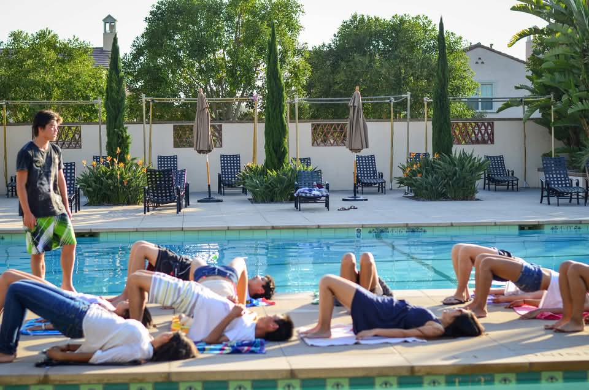

Michael Chang
I am a Research Scientist at OpenAI working on Sora.
Previously, I was a Research Scientist at Google DeepMind working on Project Astra and Gemini.
I graduated from my Ph.D. from Berkeley AI Research (BAIR) in 2023, advised by Professors Sergey Levine and Tom Griffiths, and funded by the NSF Graduate Research Felowship. My dissertation talk can be found here.
For more about my Ph.D. work, see my Ph.D. page.
Google Scholar / LinkedIn / Github / Twitter / Goodreads / Strava / Swimming / Cameo

Sora
I work on pretraining for Sora. Sign up here!
Chat-Tree
A tree-structured chat. Play with it here!
Project Astra
I led the long memory, low latency, interruption, and event-detection capabilities of the real-time multimodal assistant that was demonstrated at Google IO 2024.
See the official video, where you can find demonstrations of proactive response to visual stimuli (0:10-0:18) and long memory (1:20-1:34).
I co-watched the Google I/O keynote livestream with Astra, which was then posted immediately after the main keynote and appended to the developer keynote.
I also similarly co-watched OpenAI's GPT4o announcement a day earlier, and a clip of that can be found here.
Gemini
I worked on evaluating Gemini's hours-long video understanding capabilities, where I was co-responsible for the results shown in Fig. 9, Fig. 15, Fig. 28, and Table 47 of the Gemini 1.5 Pro paper.
The artificial programmer is the drosophila of AGI
I define AGI as the capacity to create new knowledge. The process of knowledge creation is the iterative cycle of conjecture and criticism.
Similarly, the process of programming, and debugging, is also an iterative cycle of conjecture and criticism, where the knowledge is encoded as the program. We conjecture programs for achieving a certain functionality and we criticize those programs by running them through tests. If the code fails, we conjecture reasons for why the code does do not what we want, and we criticize those reasons by comparing what we expect the values of the variables to be with what the values actually turn out to be.
The processes of programming and of knowledge creation are isomorphic.
Therefore, I believe that the artificial programmer is the drosophila of AGI: studying the process of writing and debugging code can teach us the fundamental principles for building self-improving knowledge-creating AGI systems.
Code is also cheap, verifiable, and valuable, so I believe that the shortest path to AGI is through the goal of building artificial programmers.
The "No-Push" Principle
A large fraction of our relationship with information-processing machines has been to spoon-feed machines information that they already have access to.
Examples include doing taxes, copying data from one spreadsheet to another, and filling out forms.
Such tasks reduce humans to mindless communication channels. They stifle our creative potential.
I therefore propose the No-Push Principle: Humans should not have to push information to machines that is already there. The machines should pull that information on its own.
A good example of software that has evolved in accordance to the No-Push Principle is navigation software. A few decades ago, if we wanted to go somewhere we needed to manually type in our current location to get a route to our destination. Now our phones automatically pull our location information without us having to specify it. This is good. Trends like this should continue.
Principles like the No-Push Principle give us a way to bifurcate the world and identify problems to solve. Next time when you interact with computers, ask yourself, "Am I unnecessarily pushing information to the machine that it should already know about?" If yes, then that's a problem to solve.
Here are some of my heroes that have shaped my worldview.
證嚴法師 Master Cheng Yen
充滿愛心的人最幸福。
Happiest is the person whose heart is filled with love.
對人有疑心，就無法愛人；對人有疑念，就無法原諒人；對人有疑感，就無法相信人。
We cannot love when filled with suspicion; we cannot forgive when unwilling to believe; we cannot trust when filled with doubts.
有力量去愛人或被愛的人都是幸福的人。
Blessed are those who have the ability to love and be loved by others.
問心無愧心最安，能夠付出、助人、救人，最是快樂。
Clear conscience brings peace of mind; the greatest happiness comes from the pleasure of giving and helping others.
有力量幫助他人，是自己的福。
Having the ability to help others is a blessing.
原諒別人就是善待自己。
To forgive others is, in fact, being kind to ourselves.
孝順就是讓父母安心。
Being filial is not making our parents unduly worry about us.
該做的事，排除萬難也要完成；不該做的事，無論任何困難，也要堅持立場。
Do whatever it takes to do what is right. Do whatever it takes to not do what is wrong.
生氣是拿別人的錯誤來懲罰自己。
Being angry is a form of torturing ourselves with the mistakes of others.
人要先點亮自己的心燈，才能引發別人的心燈。
Only when we light up our heart can we inspire others to do the same.
心無邪思，意無邪念，即常可自在。心正則邪不侵。
If our thoughts are upright and wholesome, we can always be at ease and evil cannot come near.
心美看什麼都美。
To a beautiful heart, everything appears beautiful.
人生不怕錯，只怕不改過。
Do not fear making mistakes in life, fear only not correcting them.

李小龍 Bruce Lee
Knowledge will give you power, but character respect.
As you think, so you shall become.
Mistakes are always forgivable, if one has the courage to admit them.
If you love life, don't waste time, for time is what life is made up of.
The key to immortality is first living a life worth remembering.
Do not pray for an easy life, pray for the strength to endure a difficult one.
The self-sufficient stand alone - most people follow the crowd and imitate.
Notice that that the stiffest tree is easily cracked, while the bamboo or willow survives by bending with the wind.
Patience is not passive; on the contrary it is concentrated strength.
What is defeat? Nothing but education. Nothing but the first step to something better.
Success means doing something sincerely and wholeheartedly.
It is compassion rather than the principle of justice which can guard us against being unjust to our fellow man.
Absorb what is useful. Discard what is not. Add what is uniquely your own.
Defeat is a state of mind. No one is ever defeated until defeat accepted as reality.
Empty your cup so that it may be filled.

